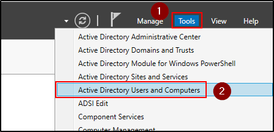
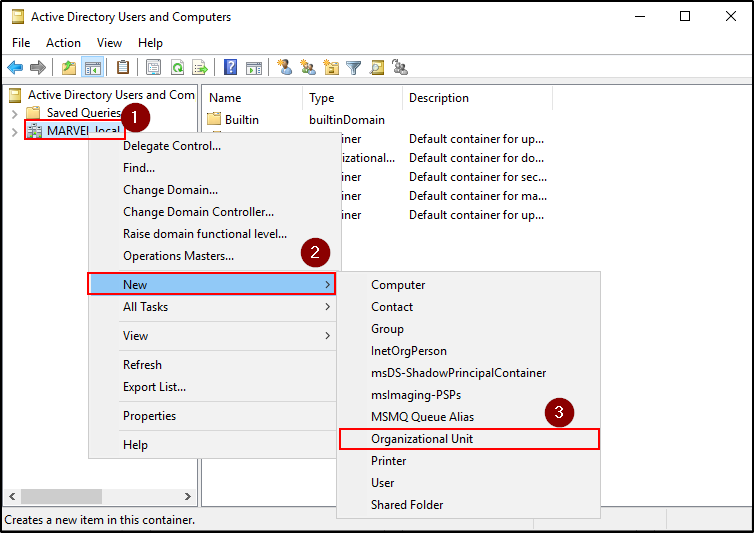
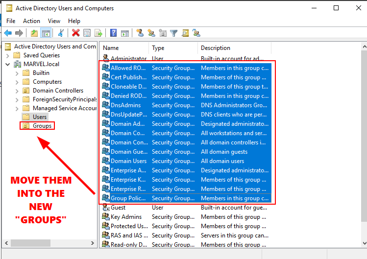
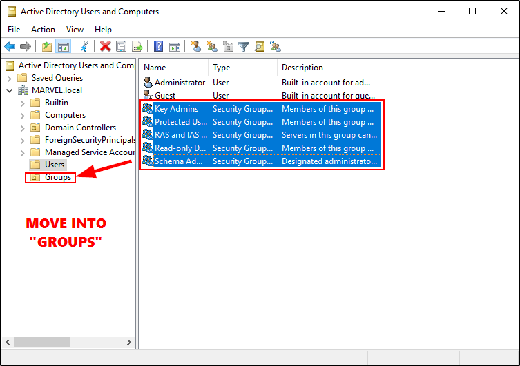
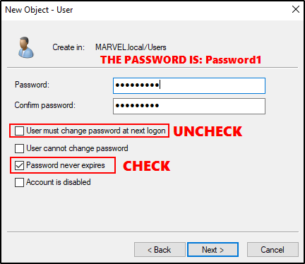
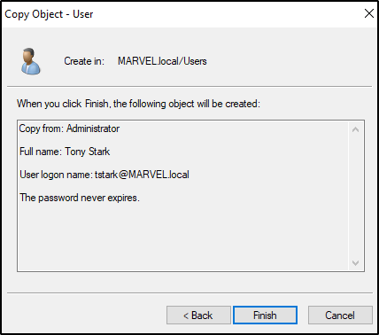
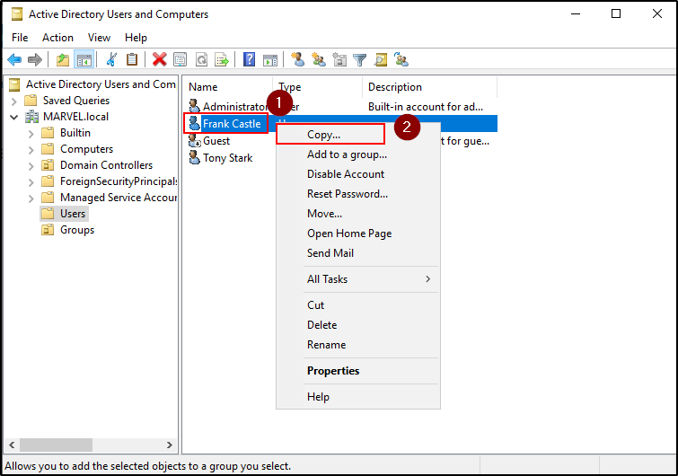
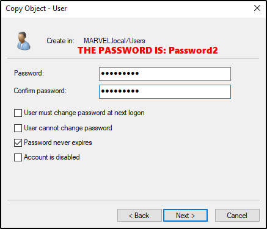

Setting Up Users, Groups and Policies
ON THE DOMAIN CONTROLLER (MARVEL\ADMIN)
















Now we can see: The user copied have the same group of the original user!!!


One more user: A SQL Account from Tony Stark


Now, we need to set up more things:


In this way we can open a SMB 139 / 445 port for SMB File Sharing
.
Now, open a Command Prompt as an Administrator:
We are going to create what is called
SPN (Service Principal Name)


Now, to be sure that is set, we can do a query on the
domain (-T)
and
query for an existent SPN (-Q)


We have set up the Users.
We have set up the Kerberos Roasting Attack.
We have set up the SMB shares.
Last thing to do is to edit some Group Policies.
First, run “Group Policy Management” as Administrator.


We will create a Group Policy Object and link it there
And call it “Disable Windows Defender”


Edit the Group Policy Object we created:
We need to to the path:
Computer Configuration - Policies - Administrative Templates - Windows Components - Windows Defender Antivirus (Click on that) - Turn off Windows Defender Antivirus
We will Enable that policy and set OK